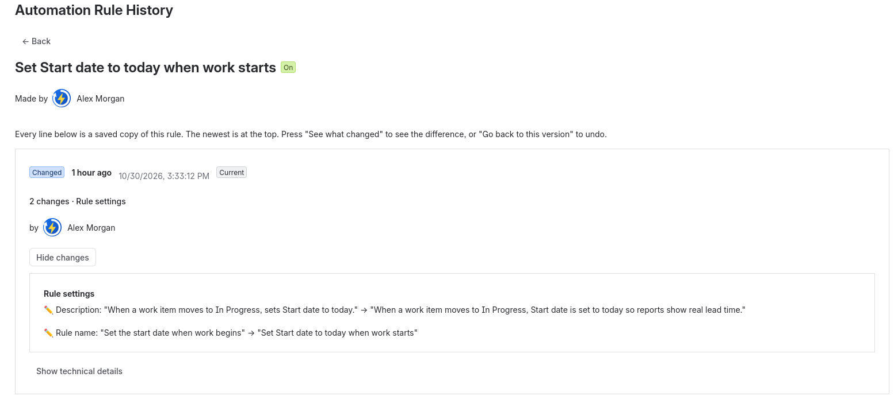
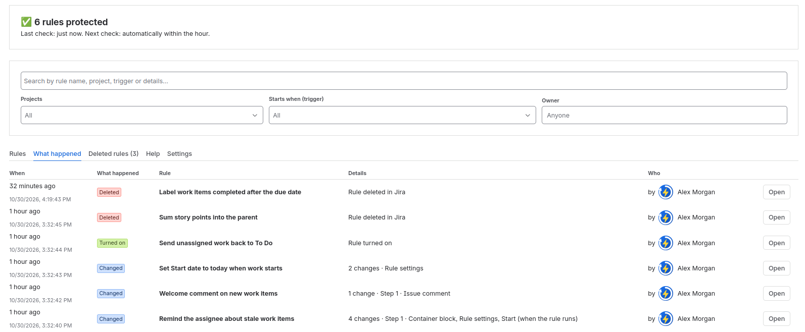
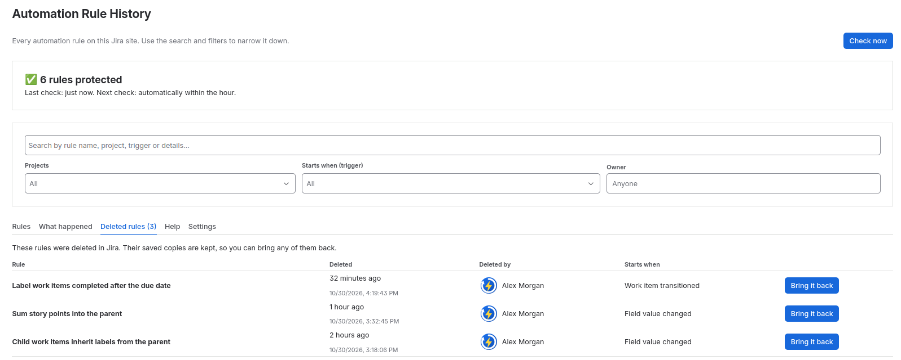
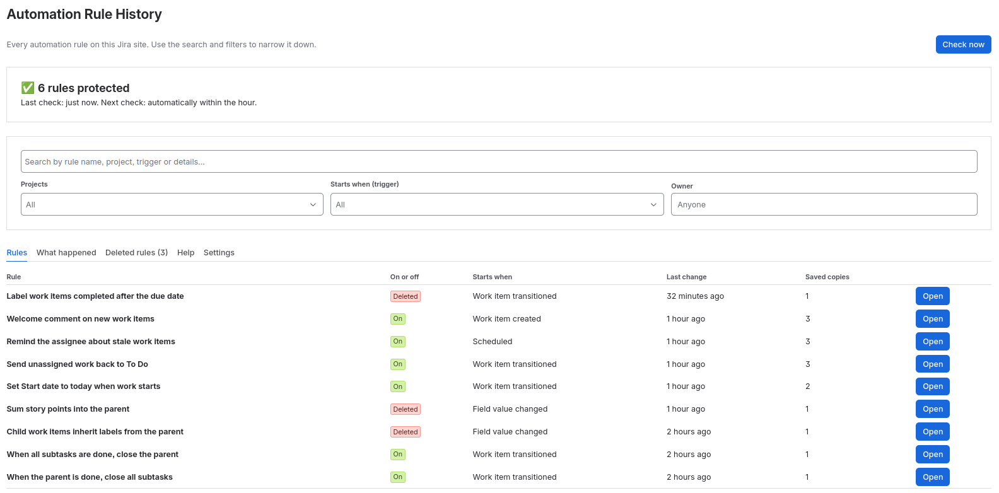

Get started in 4 steps
Takes about three minutes and is done once, by a Jira admin.
Install the app
In Jira, go to Settings ⚙ → Apps → Explore more apps. Search for
Automation Rule History, open it and press Try it free. Confirm with Start free trial. The app is ready in a few seconds. You can also install it from the Atlassian Marketplace website. Only site admins can install apps; if you are not one, Jira lets you send a request to your admin.Open the app
In Jira, go to Settings ⚙ → Apps and pick Automation Rule History in the left menu.
Create a key
Press Open the key page. On the Atlassian page click
Create API token, give it a name such asRule History, clickCreate, thenCopy. Jira only lets apps read automation rules with a key from a Jira admin.Paste and connect
Back in the app, type the email you use for Jira, paste the key and press Connect. The app saves every rule straight away. After that it checks every hour by itself.
Everyday use
- Rules lists every automation rule: on or off, what starts it, when it last changed and how many copies are saved.
- Press Open on a rule to see its saved copies, newest first.
- See what changed describes the difference in plain words, for example
Step 2 · Work item comment — Comment: "Hello" → "Bye". - Go back to this version puts that copy back in Jira. The current version is saved first, so a restore can be undone.
- Next to every change you see who made it and the exact time.
- What happened is the timeline of every change across all rules, kept for 3 months.
- Deleted rules lists every rule that was deleted, when and by whom, with a button to bring it back.
- On the site-wide page, search and filters narrow everything down by project, trigger type or owner.
- Check now saves changes immediately instead of waiting for the hourly check.




How-to guides
Undo a change that broke a rule
- Open the app and press Open next to the rule.
- Press See what changed on the newest line to see what was changed.
- On the copy from before the change, press Go back to this version, then Yes, go back.
- The rule in Jira is now exactly as it was. The broken version stays in the list, so you can switch back.
Bring back a deleted rule
- Open the Deleted rules tab. You see when each rule was deleted and by whom.
- Press Bring it back, then Go back to this version on the newest copy.
- The rule is created again in Jira with the same ID and settings.


Find rules by project, trigger or owner
- Open the app from Settings ⚙ → Apps (the site-wide page).
- Type in the search box, or pick one or more Projects, a Starts when trigger type (for example Manual trigger or Scheduled) or an Owner.
- The filters apply to Rules, What happened and Deleted rules. After opening a rule, ← Back returns to the same tab with your filters kept.


See everything that changed this week
- Open the What happened tab.
- Each line shows when the rule was edited in Jira, what kind of change it was and a short summary such as
2 changes · Start (when the rule runs), Step 1 · Send email.
Open the app from a project
Go to Project settings of any project and pick Automation Rule History in the left menu, next to Automation. There you only see that project's rules. Project administrators can use this page too: they see the history of their project's rules and can put back rules that belong only to their project. Jira admins also find the app in the Apps menu.
Change or remove the key
Open the app from Settings ⚙ → Apps and pick the Settings tab (Jira admins only; it is not shown on project pages). Repeat the steps with a new key, or press Remove the key and stop saving. Saved copies are kept until the app is uninstalled.
Questions
A rule stopped working. What do I do?
Open the rule, find the last copy from when it still worked and press Go back to this version.
Someone deleted a rule. Can I get it back?
Yes, if the app saved it before it was deleted. Open the Deleted rules tab to see when it was deleted and by whom, press Bring it back and then Go back to this version. The rule is created again with the same ID.
Can I see who changed a rule?
Yes. The app matches each change with Jira's automation audit log and shows the person next to it, for edits, turning rules on or off, and deletions. Restores made in the app always show who did them. If the audit log has no matching entry, the app shows the exact time of the edit instead.
Who can use the app?
Jira administrators can use everything. Project administrators can open the app from their project's settings: they see that project's rules and can put back rules that belong only to their project. Rules shared by several projects can only be put back by a Jira administrator, just like in Jira itself.
How long is the history kept?
The What happened timeline keeps 3 months. Saved copies of each rule (the last 100) are kept while the app is installed, so deleted rules can always be brought back.
How many copies are kept?
The last 100 copies of each rule. A new copy is only saved when the rule really changed.
Which rules are covered?
All Jira automation rules on the site that the key's owner can manage: global, multi-project and single-project rules.
Why does the key need to belong to a Jira admin?
Atlassian's automation API only answers site administrators, and it does not accept apps' own credentials.
What happens if the subscription ends?
The app stops checking for changes, but nothing is deleted. Renew and everything works again.
Pricing
Billed through the Atlassian Marketplace, per user of your Jira site, like every Jira app. Every site gets a 30-day free trial.
| Jira users on your site | Price per user per month |
|---|---|
| Up to 10 | Free |
| 11 – 100 | US$ 1.00 |
| 101 – 250 | US$ 0.75 |
| 251 – 1,000 | US$ 0.50 |
| More than 1,000 | US$ 0.25 |
The price shown on the Atlassian Marketplace listing is the one that applies. Annual plans and taxes follow Atlassian's standard Marketplace terms.
Privacy policy
Last updated 30 October 2026.
Automation Rule History is a Forge app that runs entirely on Atlassian's cloud platform. The publisher does not run its own servers and cannot see your data.
| What the app stores | Why | Where |
|---|---|---|
| Copies of your automation rules (name, trigger, steps, settings). Rules can contain account IDs, email addresses, field values or web-request settings that you configured. | To show changes and restore earlier versions | Forge storage, inside Atlassian's cloud |
| A timeline of changes: time, rule name and type of change | For the "What happened" and "Deleted rules" lists | Forge storage, kept 3 months |
| The Atlassian account ID of the person who changed, turned off, deleted or restored a rule (taken from Jira's automation audit log, or from the app for restores) | To show who made each change | Forge storage |
| The admin email and API key entered in setup | To read and restore rules through Atlassian's automation API | Forge encrypted secret storage |
- Who receives your data: nobody outside Atlassian. The app only talks to Atlassian's own API at
api.atlassian.com. - No tracking: the app has no analytics, advertising or third-party services.
- How long it is kept: the last 100 copies per rule while the app is installed; the timeline of changes for 3 months. Removing the key in Settings deletes it at once. When the app is uninstalled, Atlassian deletes the app's stored data according to the Forge platform's data retention rules.
- Your rights: to see, correct or delete data, contact support below. Most data can be removed directly by uninstalling the app.
Security
| Hosting | Built on Atlassian Forge. All code runs and all data is stored on Atlassian's cloud. The publisher has no servers and no access to your data. |
|---|---|
| Who can use it | Jira administrators, and project administrators on their own project's page (only that project's rules). The connection settings are for Jira administrators only. Every request is checked on the server, not only in the screen. |
| API key | Stored in Forge's encrypted secret storage. It is never shown again after setup and never leaves Atlassian. Used only to read rules and to restore a version an admin chooses. |
| Permissions | Two Jira scopes only: read:jira-work (to check that the user is a Jira or project admin) and storage:app (to keep the saved copies). |
| Network | One outside address only: api.atlassian.com, Atlassian's own automation API and automation audit log. All traffic is encrypted with HTTPS. |
| Data | Encrypted at rest and in transit by the Forge platform. No analytics, tracking or third-party services. |
| Undo safety | Before any restore, the current version is saved, so no restore can lose work. |
| Report a problem | Send security issues to the support address below with "Security" in the subject. We reply within two working days. |
IP allowlisting
If your Atlassian organization uses IP allowlisting, Atlassian may refuse the app's requests, because they come from Atlassian's Forge platform and not from your office network. Setup then fails with "Access was refused" even though the key is correct.
- Open ip-ranges.atlassian.com. It lists Atlassian's IP ranges as JSON.
- Take the ranges whose product is
forge. - In Atlassian Administration → Security → IP allowlists, add them to the allowlist that covers API access.
- Press Connect again in the app.
Atlassian can change these ranges, so check the list from time to time. If you need help, contact support.
Support
Questions, problems or ideas are welcome. Write to:
labsinvicta@gmail.com
We reply within two working days.